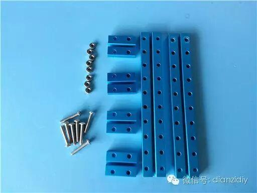
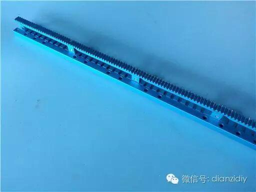
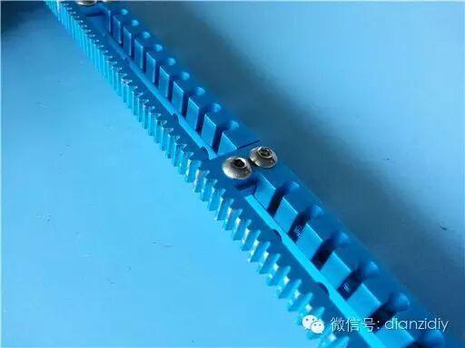
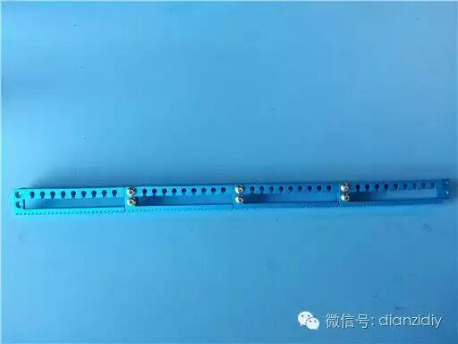
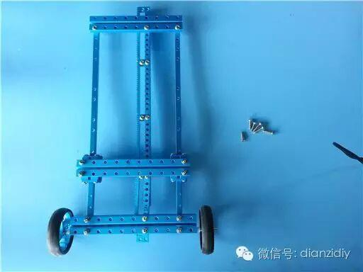
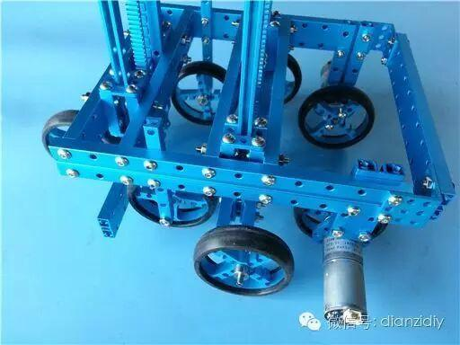
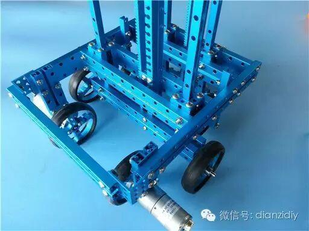
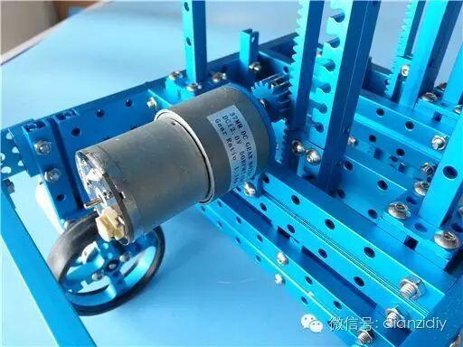
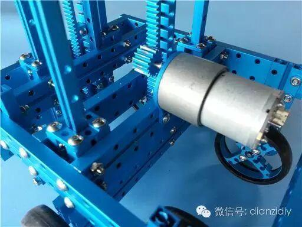
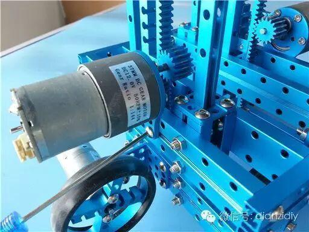

DIY爬楼梯小车（教程）
太强了！DIY爬楼梯小车（教程）
给大家介绍一下如何搭建这个案例。由于是自动爬行，那么自然有各种传感器。什么巡线（当接触开关用），超声波，限位开关，陀螺仪~~


首先先简单介绍一下实现原理，理想状态下一共有8个阶段，其中1号轮子和4号轮子都是带电机的主动轮，其他都是从动轮，而且升降装置装在2号和4号轮子上。
阶段1 前进
阶段2 超声波检测到前方有障碍（这里指的是楼梯）车体上升，1号和2号升降装置把1号和3号轮子升起来直到超声波传感器检测不到楼梯
阶段3 1号和4号轮子推动小车前进
阶段4 2号轮子的巡线传感器检测碰到楼梯了，1号升降装置把2号轮子收回去
阶段5 1号和4号轮子推动小车前进
阶段6 4号轮子上的限位开关检测到4号轮子已经碰到楼梯，主动轮停止转动，2号升降装置把4号轮子收回去
阶段7 1号轮子推动小车前进 也就是阶段1
阶段8 也就是阶段2，小车继续前进直到超声波检测到楼梯然后开始循环
这个案例在机械结构方面的一个特色就是这个升降的装置，既要可靠，又要比较迅速地升降。所以我选择了齿条齿轮的配合方式，并且使用单孔梁作为滑轨，用3*3的同步带固定片配合双孔梁做了个简易滑块。

下面是搭建使用的材料和方法。
升降装置1
 双孔梁032*4 双孔梁160*2 M4*22螺丝*8 M4螺母*8
双孔梁032*4 双孔梁160*2 M4*22螺丝*8 M4螺母*8
 然后使用下面的材料把上面搭好的结构连接起来
然后使用下面的材料把上面搭好的结构连接起来
3*3同步带固定片*4 M4*8螺丝*16
 这样滑块就搭好了
这样滑块就搭好了

额。。攀爬原理差不多就是这样了，接下来给大家介绍一下搭建方法以及调试过程中碰到的一些问题
所以我使用了4段齿条拼接起来，至于为什么上面的材料图片中有一根312的单孔梁呢，这是有原因的。光靠齿
条拼接的话在升降过程中齿条与齿条之间的连接处会弯，这一弯齿轮和齿条的啮合就出问题了，哒哒哒滑齿了。至于为什么我会发现这个问题呢，这个就不解释了，说多了都是泪。所以我们要把齿条固定在这根单孔梁上。如下
  
 接下来把导轨和齿条固定在一起
接下来把导轨和齿条固定在一起
材料 144双孔梁*1 M4*22螺丝*3 M4螺母*2
 176双孔梁*2 M4*22螺丝*6 M4螺母*6
176双孔梁*2 M4*22螺丝*6 M4螺母*6
 装上2号轮子（从动轮） 使用以下材料
装上2号轮子（从动轮） 使用以下材料
 轮胎*2 90T同步带轮*2 螺丝轴*2 法兰轴承*4 M4螺母*2M3*5无头螺丝*2 4*2塑料垫片*4
轮胎*2 90T同步带轮*2 螺丝轴*2 法兰轴承*4 M4螺母*2M3*5无头螺丝*2 4*2塑料垫片*4
 把轮子固定在双控梁的端面
把轮子固定在双控梁的端面

 导轨和齿条的搭建与1号升降装置一样上端的连接使用080双孔梁替代144双孔梁
导轨和齿条的搭建与1号升降装置一样上端的连接使用080双孔梁替代144双孔梁
 128双孔梁*1 M4*22螺丝*6 M4螺母*6
128双孔梁*1 M4*22螺丝*6 M4螺母*6
 装上L形支架，用 M4*14螺丝*2 M4螺母*2 固定在梁上
装上L形支架，用 M4*14螺丝*2 M4螺母*2 固定在梁上
 完成2号升降装置的搭建后就可以开始搭建4号轮子（主动轮）所需材料如下
完成2号升降装置的搭建后就可以开始搭建4号轮子（主动轮）所需材料如下
 25mm电机*1 90T同步带轮 25mm电机支架 传动固定盘 M3*5螺丝 M4*14螺丝
25mm电机*1 90T同步带轮 25mm电机支架 传动固定盘 M3*5螺丝 M4*14螺丝
 套上轮胎，用 M4*14螺丝*2 螺母*2 固定在L形支架上
套上轮胎，用 M4*14螺丝*2 螺母*2 固定在L形支架上
 完成1、2号升降装置和2、4号轮子搭建，整车结构就完成一半了
完成1、2号升降装置和2、4号轮子搭建，整车结构就完成一半了
 接下来开始搭建主车架、1号和3号轮子首先，把1号轮子（主动轮）搭建好
接下来开始搭建主车架、1号和3号轮子首先，把1号轮子（主动轮）搭建好
轮胎*2 90T同步带轮*2 传动固定盘*2 M4*14螺丝*8 M4螺母*4 M3*5螺丝*4 M3*5无头螺丝*2 25mm电机*2 25mm电机支架*2 064双孔梁*2
 搭建前防撞杠
搭建前防撞杠
 160双孔梁*1 L形支架*2 M4*14螺丝*4 M4螺母*4
160双孔梁*1 L形支架*2 M4*14螺丝*4 M4螺母*4
 搭建主车架
搭建主车架
 192双孔梁*2 防撞杠*1 前轮*2 M4*30螺丝*6 M4螺母*6
192双孔梁*2 防撞杠*1 前轮*2 M4*30螺丝*6 M4螺母*6
 搭建3号轮子（从动轮）
搭建3号轮子（从动轮）
 轮胎*2 90T同步带轮*2 088单孔梁*2 法兰轴承*4 螺纹轴*2
轮胎*2 90T同步带轮*2 088单孔梁*2 法兰轴承*4 螺纹轴*2
4*2塑料垫片*4 螺母*2 M3*5无头螺丝*2
 M4*22螺丝*4 M4螺母*4
M4*22螺丝*4 M4螺母*4
 把3号轮子固定在车架上
把3号轮子固定在车架上
 装上2号升降装置
装上2号升降装置
 使用M4*14螺丝*8
使用M4*14螺丝*8
 装上1号升降装置
装上1号升降装置
 使用M4*14螺丝*6
使用M4*14螺丝*6
  
由于楼梯宽度有限，轮子又比较大所以只能把轮子错开安装，为了节约搭建时间和材料，4号轮组之用了一个电机和一个轮子
再安装升级装置的电机
 37电机（装好电机支架）*2 18T齿轮*2
37电机（装好电机支架）*2 18T齿轮*2
M3*5无头螺丝*2 M4*8螺丝*4
调整好齿轮和齿条的距离分别固定在1号、2号升降装置双孔梁的螺纹槽上   
 完成机械搭建
完成机械搭建
接下来开始安装传感器
限位开关*1
 装在2号升降装置侧面
装在2号升降装置侧面
 限位开关*2
限位开关*2
 分别装在1号2号升降装置的梁上。（作用：限制抬升高度）
分别装在1号2号升降装置的梁上。（作用：限制抬升高度）
 安装电机驱动
安装电机驱动
 安装巡线传感器
安装巡线传感器
 M4*22螺丝 4*10塑料圆柱
M4*22螺丝 4*10塑料圆柱
4*2塑料垫片*4 巡线传感器*1
 安装陀螺仪
安装陀螺仪
安装超声波传感器
由于超声波模块没办法检测0-30mm的距离，所以放里面去了 让防撞杆去撞楼梯，小车撞上障碍后刚好是30mm多点，顺利检测到（这都是调试后才发现的~_~!!）
 安装主控板
安装主控板
 安装适配器（限位开关用）
安装适配器（限位开关用）
 基本上传感器安装好了，现在介绍一下各个整车结构和传感器
基本上传感器安装好了，现在介绍一下各个整车结构和传感器
 整车从左到右可以按轮子分成4个部分，其中1号轮子和4号轮子是主动轮（驱动轮），2号和3号轮子是从动轮
整车从左到右可以按轮子分成4个部分，其中1号轮子和4号轮子是主动轮（驱动轮），2号和3号轮子是从动轮
 其中1号和2号升降装置控制2号和4号轮子的位置
其中1号和2号升降装置控制2号和4号轮子的位置
这里加装陀螺仪是因为我们升降装置用的是直流电机，没办法保证车体平衡，所以加入陀螺仪调整电机抬升速度

信息部/张晋鹏